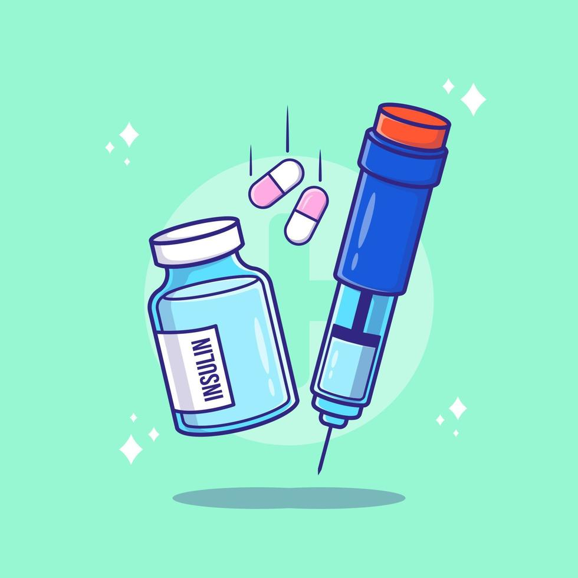
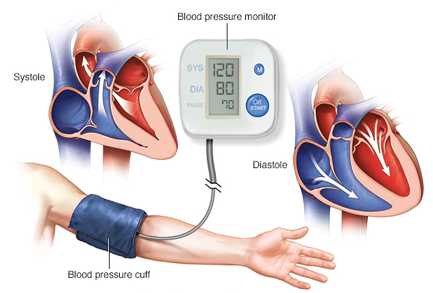
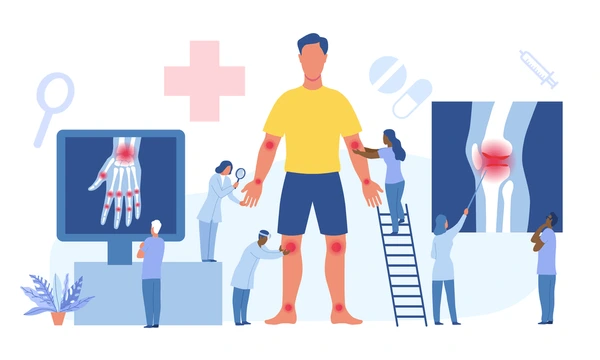
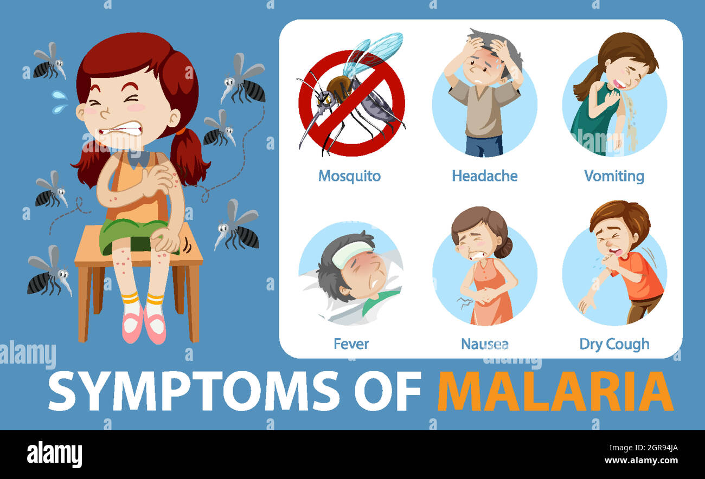
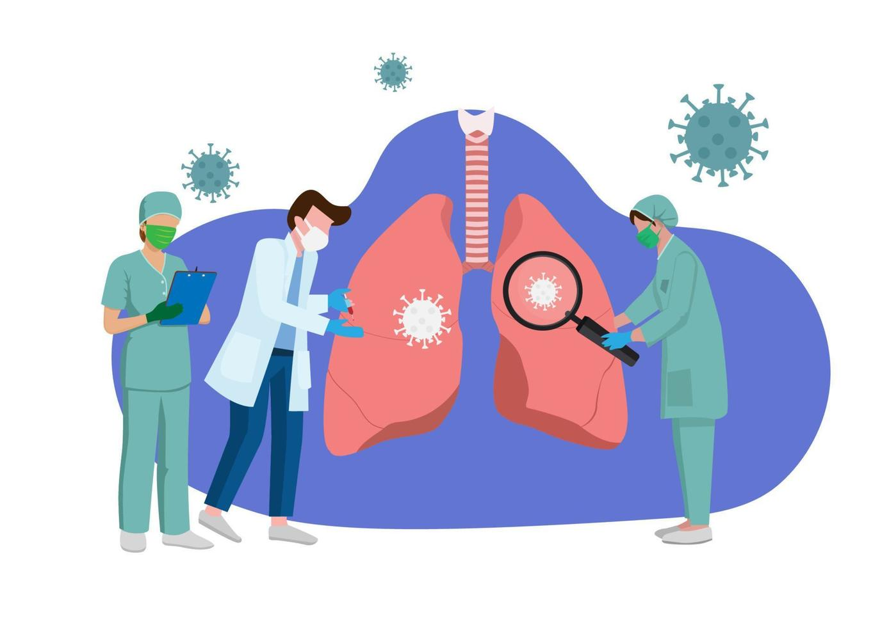

Diseases and Treatments
Influenza (Flu)
Symptoms: Fever, cough, sore throat, muscle aches.
Treatment: Rest, fluids, antiviral medication.
Diabetes

Symptoms: Frequent urination, excessive thirst, fatigue.
Treatment: Insulin therapy, diet control, exercise.
Hypertension

Symptoms: Headache, dizziness, shortness of breath.
Treatment: Medication, lifestyle changes.
Asthma
Symptoms: Shortness of breath, wheezing, coughing.
Treatment: Inhalers, medication, avoiding triggers.
Covid-19
Symptoms: Fever, cough, loss of taste or smell.
Treatment: Supportive care, vaccination, antiviral drugs.
Cancer
Symptoms: Unexplained weight loss, fatigue, pain.
Treatment: Chemotherapy, radiation, surgery.
Improving Cancer Survival Rate in Kenya
Key Strategies to Improve Survival Rates by Even 1%
1. Early Detection & Screening
Increase Awareness: Launch nationwide campaigns to educate people about cancer symptoms, risk factors, and the importance of early screening.
Expand Screening Programs: Provide free or subsidized screening services, especially for cancers such as breast, cervical, and prostate.
Community Health Workers: Train and deploy community health workers to conduct outreach and encourage screening.
2. Improve Access to Treatment
Expand Cancer Treatment Centers: Strengthen regional cancer centers to ease the burden on major hospitals.
Affordable Chemotherapy & Radiotherapy: Collaborate with pharmaceutical companies and the government to reduce treatment costs.
Health Insurance Coverage: Advocate for expanded NHIF (National Health Insurance Fund) coverage for cancer treatment.
3. Strengthen Healthcare Infrastructure
Increase Oncologists & Specialists: Train more oncologists, pathologists, and radiologists to reduce the patient backlog.
Improve Diagnostic Facilities: Invest in better pathology labs to ensure timely and accurate diagnoses.
Decentralize Services: Strengthen county-level hospitals to offer chemotherapy and radiotherapy.
4. Improve Patient Support & Palliative Care
Nutritional & Psychological Support: Offer support programs to help improve treatment adherence.
Palliative Care Access: Expand hospice and palliative care services for patients with advanced cancer.
5. Policy & Research
Stronger Cancer Registry: Improve data collection to effectively track cancer cases and survival rates.
Tobacco & Alcohol Control: Strengthen policies against tobacco, alcohol, and other carcinogens.
Arthritis

Symptoms: Joint pain, stiffness, swelling.
Treatment: Pain relief, physical therapy.
Alzheimer's Disease
Symptoms: Memory loss, confusion.
Treatment: Medications, cognitive therapy.
Tuberculosis
Symptoms: Persistent cough, weight loss, night sweats.
Treatment: Antibiotic therapy.
Malaria

Symptoms: Fever, chills, nausea, vomiting.
Treatment: Antimalarial drugs.
Pneumonia

Symptoms: Cough, chest pain, fever, difficulty breathing.
Treatment: Antibiotics, oxygen therapy.
Heart Disease
Symptoms: Chest pain, shortness of breath, irregular heartbeat, fatigue, swelling in legs.
Treatment: Lifestyle changes, medications, surgery, cardiac rehabilitation.
Prevention: Regular exercise, healthy diet, quit smoking, manage stress.
Stroke
Symptoms: Sudden numbness, confusion, trouble speaking, vision problems, severe headache.
Treatment: Emergency medical care, clot-busting drugs, rehabilitation therapy.
Remember FAST: Face drooping, Arm weakness, Speech difficulty, Timge to call emergency.
HIV/AIDS
Symptoms: Fever, fatigue, swollen lymph nodes, weight loss, opportunistic infections.
Treatment: Antiretroviral therapy (ART), regular monitoring, treating opportunistic infections.
Prevention: Safe sex practices, regular testing, PrEP for high-risk individuals.
Cholera
Symptoms: Severe watery diarrhea, dehydration, vomiting, leg cramps.
Treatment: Oral rehydration salts (ORS), IV fluids, antibiotics in severe cases.
Prevention: Clean drinking water, proper sanitation, handwashing, vaccination.
Typhoid Fever
Symptoms: High fever, weakness, stomach pain, headache, loss of appetite, rash.
Treatment: Antibiotics, hydration, rest, hospitalization in severe cases.
Prevention: Vaccination, safe food and water, proper hygiene.
Dengue Fever
Symptoms: High fever, severe headache, pain behind eyes, joint and muscle pain, rash.
Treatment: Pain relievers, rest, fluids, monitoring for severe dengue.
Prevention: Mosquito control, use repellents, remove standing water.
Hepatitis
Symptoms: Jaundice, fatigue, abdominal pain, nausea, dark urine.
Treatment: Antiviral medications, liver transplant (severe cases), supportive care.
Prevention: Vaccination (Hep A & B), safe practices, avoid sharing needles.
Kidney Disease
Symptoms: Fatigue, swelling, changes in urination, nausea, shortness of breath.
Treatment: Medications, dialysis, kidney transplant, dietary changes.
Prevention: Control blood pressure and diabetes, stay hydrated, avoid NSAIDs overuse.
Depression
Symptoms: Persistent sadness, loss of interest, fatigue, sleep problems, difficulty concentrating.
Treatment: Therapy, medications, lifestyle changes, support groups.
Help: Reach out to mental health professionals. You are not alone.
Measles
Symptoms: High fever, cough, runny nose, red eyes, skin rash starting on face.
Treatment: Supportive care, vitamin A supplementation, fever management.
Prevention: MMR vaccination is highly effective.
Mumps
Symptoms: Swollen salivary glands, fever, headache, muscle aches, fatigue.
Treatment: Rest, pain relievers, cold/warm compresses, plenty of fluids.
Prevention: MMR vaccine provides protection.
Rubella (German Measles)
Symptoms: Mild rash, low-grade fever, swollen lymph nodes, joint pain.
Treatment: Rest and supportive care; dangerous during pregnancy.
Prevention: MMR vaccination, especially important for women of childbearing age.
Chickenpox (Varicella)
Symptoms: Itchy blistering rash, fever, tiredness, loss of appetite.
Treatment: Calamine lotion, antihistamines, antiviral drugs for severe cases.
Prevention: Varicella vaccine is highly effective.
Dysentery
Symptoms: Severe diarrhea with blood/mucus, abdominal cramps, fever.
Treatment: Rehydration therapy, antibiotics for bacterial dysentery.
Prevention: Clean water, proper sanitation, handwashing.
Polio (Poliomyelitis)
Symptoms: Most asymptomatic; severe cases cause paralysis, muscle weakness.
Treatment: No cure; supportive care, physical therapy for paralysis.
Prevention: Polio vaccine has nearly eradicated the disease globally.
Rabies
Symptoms: Fever, headache, confusion, aggression, fear of water, paralysis.
Treatment: Post-exposure prophylaxis (PEP) immediately after bite; fatal once symptoms appear.
Prevention: Vaccinate pets, avoid wild animals, seek immediate care after animal bites.
Hepatitis A
Symptoms: Fatigue, nausea, abdominal pain, jaundice, dark urine.
Treatment: Rest, adequate nutrition, avoid alcohol; usually resolves on its own.
Prevention: Hepatitis A vaccine, safe food and water practices.
Hepatitis B
Symptoms: Jaundice, fatigue, abdominal pain, nausea, joint pain.
Treatment: Antiviral medications, liver monitoring, potential liver transplant.
Prevention: Hepatitis B vaccine, safe sex, avoid sharing needles.
Hepatitis C
Symptoms: Often asymptomatic; fatigue, jaundice, abdominal pain in later stages.
Treatment: Direct-acting antivirals (DAAs) can cure most cases.
Prevention: No vaccine; avoid sharing needles, safe blood transfusions.
Yellow Fever
Symptoms: Fever, headache, jaundice, muscle pain, bleeding.
Treatment: Supportive care; no specific antiviral treatment.
Prevention: Yellow fever vaccine, mosquito control measures.
Ebola Virus Disease
Symptoms: Fever, severe headache, muscle pain, vomiting, diarrhea, internal/external bleeding.
Treatment: Supportive care, IV fluids, Ebola vaccines and treatments now available.
Prevention: Avoid contact with infected persons/animals, proper protective equipment.
Whooping Cough (Pertussis)
Symptoms: Severe coughing fits with "whooping" sound, vomiting after coughing.
Treatment: Antibiotics, supportive care, hospitalization for infants.
Prevention: DTaP/Tdap vaccines are highly effective.
Tetanus
Symptoms: Muscle stiffness (jaw lock), spasms, difficulty swallowing, fever.
Treatment: Antitoxin, muscle relaxants, wound care, ICU support.
Prevention: Tetanus vaccine, proper wound cleaning, booster shots every 10 years.
Meningitis
Symptoms: Severe headache, stiff neck, fever, sensitivity to light, confusion.
Treatment: Emergency antibiotics for bacterial; supportive care for viral.
Prevention: Meningococcal vaccines, good hygiene practices.
Ringworm
Symptoms: Circular, red, scaly patches on skin; itching; hair loss in affected areas.
Treatment: Antifungal creams, oral antifungals for severe cases.
Prevention: Keep skin clean/dry, avoid sharing personal items, treat infected pets.
Coronary Heart Disease
Symptoms: Chest pain (angina), shortness of breath, heart attack.
Treatment: Lifestyle changes, medications, angioplasty, bypass surgery.
Prevention: Healthy diet, exercise, no smoking, manage blood pressure/cholesterol.
Chronic Bronchitis
Symptoms: Persistent cough with mucus, wheezing, chest discomfort, fatigue.
Treatment: Bronchodilators, steroids, pulmonary rehabilitation, oxygen therapy.
Prevention: Quit smoking, avoid air pollutants, get vaccinated against flu.
Emphysema
Symptoms: Shortness of breath, chronic cough, wheezing, barrel chest.
Treatment: Bronchodilators, oxygen therapy, surgery in severe cases.
Prevention: Never smoke, avoid secondhand smoke and pollutants.
Breast Cancer
Symptoms: Lump in breast, change in size/shape, nipple discharge, skin changes.
Treatment: Surgery, radiation, chemotherapy, hormone therapy, targeted therapy.
Prevention: Regular screening, healthy lifestyle, limit alcohol, breastfeeding.
Prostate Cancer
Symptoms: Difficulty urinating, blood in urine/semen, bone pain, erectile dysfunction.
Treatment: Active surveillance, surgery, radiation, hormone therapy.
Prevention: Regular screening after age 50, healthy diet, exercise.
Lung Cancer
Symptoms: Persistent cough, coughing blood, chest pain, weight loss, hoarseness.
Treatment: Surgery, chemotherapy, radiation, targeted therapy, immunotherapy.
Prevention: Don't smoke, avoid secondhand smoke, test for radon at home.
Cervical Cancer
Symptoms: Abnormal bleeding, pelvic pain, pain during sex, unusual discharge.
Treatment: Surgery, radiation, chemotherapy, depending on stage.
Prevention: HPV vaccine, regular Pap smears, safe sex practices.
Colon Cancer
Symptoms: Change in bowel habits, blood in stool, abdominal pain, weight loss.
Treatment: Surgery, chemotherapy, radiation, targeted therapy.
Prevention: Colonoscopy screening, high-fiber diet, exercise, limit red meat.
Liver Cirrhosis
Symptoms: Fatigue, easy bleeding/bruising, jaundice, ascites, confusion.
Treatment: Treating underlying cause, medications, liver transplant.
Prevention: Limit alcohol, prevent hepatitis, maintain healthy weight.
Peptic Ulcer Disease
Symptoms: Burning stomach pain, bloating, heartburn, nausea, intolerance to fatty foods.
Treatment: Antibiotics for H. pylori, PPIs, antacids, lifestyle changes.
Prevention: Avoid NSAIDs overuse, limit alcohol, don't smoke, manage stress.
Obesity
Symptoms: BMI over 30, excess body fat, breathlessness, joint pain, fatigue.
Treatment: Diet modification, exercise, medications, bariatric surgery.
Prevention: Balanced diet, regular physical activity, portion control.
Migraine
Symptoms: Intense throbbing headache, nausea, light/sound sensitivity, aura.
Treatment: Pain relievers, triptans, anti-nausea meds, preventive medications.
Prevention: Identify triggers, regular sleep, stress management, stay hydrated.
Epilepsy
Symptoms: Seizures, temporary confusion, staring, uncontrollable jerking, loss of consciousness.
Treatment: Anti-epileptic drugs, surgery, vagus nerve stimulation, ketogenic diet.
Prevention: Prevent head injuries, manage fevers in children, prenatal care.
Osteoarthritis
Symptoms: Joint pain, stiffness, tenderness, loss of flexibility, bone spurs.
Treatment: Physical therapy, pain relievers, injections, joint replacement surgery.
Prevention: Maintain healthy weight, exercise regularly, protect joints from injury.
Rheumatoid Arthritis
Symptoms: Swollen, tender joints (especially hands), morning stiffness, fatigue, fever.
Treatment: DMARDs, biologics, steroids, physical therapy.
Prevention: No proven prevention; early treatment prevents joint damage.
Gout
Symptoms: Sudden severe joint pain (often big toe), swelling, redness, warmth.
Treatment: NSAIDs, colchicine, corticosteroids, uric acid-lowering drugs.
Prevention: Limit alcohol, avoid high-purine foods, stay hydrated, maintain healthy weight.
Scoliosis
Symptoms: Curved spine, uneven shoulders/hips, back pain, difficulty breathing in severe cases.
Treatment: Observation, bracing, physical therapy, spinal fusion surgery.
Prevention: Early screening in adolescents; most cases are idiopathic.
Osteoporosis
Symptoms: Often silent until fracture; back pain, loss of height, stooped posture.
Treatment: Calcium/vitamin D, bisphosphonates, hormone therapy, lifestyle changes.
Prevention: Weight-bearing exercise, adequate calcium/vitamin D, avoid smoking/excess alcohol.
Glaucoma
Symptoms: Gradual vision loss, tunnel vision, eye pain, halos around lights.
Treatment: Eye drops, laser treatment, surgery to reduce eye pressure.
Prevention: Regular eye exams, especially after age 40 or with family history.
Sickle Cell Disease
Symptoms: Pain crises, anemia, frequent infections, delayed growth, vision problems.
Treatment: Pain management, hydroxyurea, blood transfusions, bone marrow transplant.
Prevention: Genetic counseling; no prevention for inherited disease.
Hemophilia
Symptoms: Excessive bleeding, easy bruising, joint pain/swelling, nosebleeds.
Treatment: Clotting factor replacement therapy, gene therapy (emerging).
Prevention: Genetic counseling; avoid injury; proper medical management.
Down Syndrome
Symptoms: Intellectual disability, distinctive facial features, heart defects, delayed development.
Treatment: Early intervention, speech/physical therapy, educational support, treating associated conditions.
Prevention: Cannot be prevented; prenatal screening available.
Cystic Fibrosis
Symptoms: Persistent cough, lung infections, poor growth, salty skin, digestive issues.
Treatment: Airway clearance, inhaled medications, enzymes, CFTR modulators.
Prevention: Genetic counseling; carrier testing before pregnancy.
Albinism
Symptoms: Lack of pigment in skin/hair/eyes, vision problems, sun sensitivity.
Treatment: Sun protection, vision aids, regular skin checks for cancer.
Prevention: Genetic condition; cannot be prevented.
Color Blindness
Symptoms: Difficulty distinguishing colors, especially red/green or blue/yellow.
Treatment: No cure; special glasses/lenses may help; adaptive strategies.
Prevention: Genetic condition; cannot be prevented.
Turner Syndrome
Symptoms: Short stature, delayed puberty, infertility, heart defects, learning differences.
Treatment: Growth hormone, estrogen therapy, heart monitoring, fertility treatments.
Prevention: Chromosomal condition; cannot be prevented.
Klinefelter Syndrome
Symptoms: Small testes, reduced fertility, breast tissue growth, tall stature, learning difficulties.
Treatment: Testosterone therapy, fertility treatment, speech/physical therapy.
Prevention: Chromosomal condition; cannot be prevented.
Muscular Dystrophy
Symptoms: Progressive muscle weakness, difficulty walking, frequent falls, breathing problems.
Treatment: Physical therapy, corticosteroids, assistive devices, heart/lung support.
Prevention: Genetic counseling for carriers.
Spina Bifida
Symptoms: Varies from mild to severe; leg weakness, bladder/bowel problems, hydrocephalus.
Treatment: Surgery, physical therapy, bladder management, shunts for hydrocephalus.
Prevention: Folic acid before and during early pregnancy significantly reduces risk.
Thalassemia
Symptoms: Fatigue, weakness, pale skin, slow growth, bone deformities, iron overload.
Treatment: Blood transfusions, iron chelation, bone marrow transplant.
Prevention: Genetic counseling; carrier screening.
Achondroplasia (Dwarfism)
Symptoms: Short stature, short limbs, large head, spinal stenosis.
Treatment: Growth hormone, surgery for complications, physical therapy.
Prevention: Genetic mutation; usually occurs spontaneously.
Phenylketonuria (PKU)
Symptoms: Intellectual disability (if untreated), seizures, skin rashes, musty odor.
Treatment: Strict low-phenylalanine diet from birth, special formula.
Prevention: Newborn screening allows early dietary intervention.
Huntington's Disease
Symptoms: Involuntary movements, cognitive decline, psychiatric symptoms, difficulty swallowing.
Treatment: Medications for symptoms, physical/speech therapy, supportive care.
Prevention: Genetic testing; genetic counseling for at-risk families.
Marfan Syndrome
Symptoms: Tall/thin build, long limbs, heart valve problems, lens dislocation, aortic enlargement.
Treatment: Beta-blockers, regular heart monitoring, aortic surgery if needed.
Prevention: Genetic condition; avoid strenuous exercise to protect heart.
Anxiety Disorder
Symptoms: Excessive worry, restlessness, rapid heartbeat, sweating, difficulty concentrating.
Treatment: CBT therapy, medications (SSRIs, benzodiazepines), relaxation techniques.
Prevention: Stress management, regular exercise, limit caffeine/alcohol.
Bipolar Disorder
Symptoms: Manic episodes (elevated mood, energy), depressive episodes, mood swings.
Treatment: Mood stabilizers, antipsychotics, therapy, lifestyle management.
Prevention: Consistent treatment, sleep routine, avoid triggers.
Schizophrenia
Symptoms: Hallucinations, delusions, disorganized thinking, social withdrawal.
Treatment: Antipsychotic medications, psychotherapy, social support, rehabilitation.
Prevention: Early intervention, avoiding substance abuse, managing stress.
Autism Spectrum Disorder
Symptoms: Social communication challenges, repetitive behaviors, sensory sensitivities.
Treatment: Behavioral therapy (ABA), speech therapy, occupational therapy, educational support.
Prevention: Cause unknown; early intervention improves outcomes.
ADHD (Attention-Deficit/Hyperactivity Disorder)
Symptoms: Inattention, hyperactivity, impulsivity, difficulty organizing, forgetfulness.
Treatment: Stimulant medications, behavioral therapy, organizational strategies.
Prevention: Prenatal care, avoiding alcohol/smoking during pregnancy.
Parkinson's Disease
Symptoms: Tremor, stiffness, slow movement, balance problems, speech changes.
Treatment: Levodopa, dopamine agonists, deep brain stimulation, physical therapy.
Prevention: Exercise may reduce risk; avoid certain pesticides.
Dementia
Symptoms: Memory loss, confusion, difficulty with daily tasks, personality changes.
Treatment: Medications, cognitive therapy, supportive care, treating underlying causes.
Prevention: Exercise, healthy diet, mental stimulation, social engagement.
Multiple Sclerosis
Symptoms: Numbness, vision problems, fatigue, muscle weakness, coordination issues.
Treatment: Disease-modifying therapies, steroids for flares, physical therapy.
Prevention: Vitamin D, not smoking may reduce risk.
Cerebral Palsy
Symptoms: Movement difficulties, muscle stiffness/weakness, poor coordination, speech problems.
Treatment: Physical therapy, medications for spasticity, surgery, assistive devices.
Prevention: Prenatal care, preventing brain injury, treating jaundice in newborns.
Insomnia
Symptoms: Difficulty falling/staying asleep, waking too early, daytime fatigue, irritability.
Treatment: Sleep hygiene, CBT-I therapy, medications (short-term), relaxation techniques.
Prevention: Regular sleep schedule, limit caffeine, comfortable sleep environment.
Panic Disorder
Symptoms: Sudden intense fear, racing heart, sweating, trembling, shortness of breath.
Treatment: CBT, SSRIs, breathing techniques, exposure therapy.
Prevention: Stress management, regular exercise, avoiding stimulants.
Obsessive-Compulsive Disorder (OCD)
Symptoms: Intrusive thoughts, repetitive behaviors (checking, cleaning), anxiety if rituals not performed.
Treatment: ERP therapy, SSRIs, cognitive behavioral therapy.
Prevention: Early intervention when symptoms appear.
Post-Traumatic Stress Disorder (PTSD)
Symptoms: Flashbacks, nightmares, avoidance, hypervigilance, emotional numbness.
Treatment: Trauma-focused therapy, EMDR, medications, support groups.
Prevention: Early psychological support after trauma.
Kwashiorkor
Symptoms: Swollen belly, edema, skin changes, hair discoloration, growth failure.
Treatment: Gradual refeeding with protein-rich foods, treating infections.
Prevention: Adequate protein intake, food security, nutritional education.
Marasmus
Symptoms: Severe wasting, extreme thinness, loose skin, weakness, growth retardation.
Treatment: Careful refeeding, therapeutic foods (F-75, F-100), treating underlying illness.
Prevention: Adequate caloric intake, breastfeeding, food security.
Anemia
Symptoms: Fatigue, weakness, pale skin, shortness of breath, dizziness, cold hands/feet.
Treatment: Iron supplements, B12 injections, treating underlying cause, blood transfusions.
Prevention: Iron-rich diet, vitamin C for absorption, treating parasitic infections.
Rickets
Symptoms: Soft/weak bones, bowed legs, delayed growth, dental problems, muscle weakness.
Treatment: Vitamin D and calcium supplements, sunlight exposure.
Prevention: Adequate vitamin D, sunlight, fortified foods.
Scurvy
Symptoms: Bleeding gums, loose teeth, slow wound healing, fatigue, joint pain.
Treatment: Vitamin C supplements, citrus fruits, vegetables.
Prevention: Adequate vitamin C intake through fruits and vegetables.
Beriberi
Symptoms: Numbness, muscle weakness, heart problems, difficulty walking, confusion.
Treatment: Thiamine (vitamin B1) supplements, improved diet.
Prevention: Whole grains, legumes, avoiding excessive alcohol.
Pellagra
Symptoms: Dermatitis, diarrhea, dementia (the 3 D's), red/swollen tongue.
Treatment: Niacin (vitamin B3) supplements, nicotinamide.
Prevention: Balanced diet with meat, fish, nuts, legumes.
Goitre
Symptoms: Swelling at base of neck, difficulty swallowing/breathing, coughing, hoarseness.
Treatment: Iodine supplements, thyroid medications, surgery if large.
Prevention: Iodized salt, seafood, dairy products.
Night Blindness
Symptoms: Difficulty seeing in low light, slow adaptation to darkness.
Treatment: Vitamin A supplements, treating underlying conditions.
Prevention: Vitamin A-rich foods (carrots, liver, eggs, leafy greens).
Protein-Energy Malnutrition
Symptoms: Weight loss, muscle wasting, fatigue, weakened immunity, slow growth in children.
Treatment: Nutritional rehabilitation, therapeutic foods, treating infections.
Prevention: Adequate protein and calorie intake, food security programs.
Lupus
Symptoms: Butterfly rash, joint pain, fatigue, fever, kidney problems, sun sensitivity.
Treatment: NSAIDs, antimalarials, immunosuppressants, biologics.
Prevention: No prevention; sun protection, avoiding triggers help manage it.
Type 1 Diabetes
Symptoms: Extreme thirst, frequent urination, weight loss, fatigue, blurred vision.
Treatment: Insulin therapy (essential), blood sugar monitoring, carb counting.
Prevention: Cannot be prevented; autoimmune destruction of beta cells.
Psoriasis
Symptoms: Red, scaly patches on skin, itching, burning, nail changes, joint pain.
Treatment: Topical treatments, phototherapy, systemic medications, biologics.
Prevention: Manage triggers (stress, infections, skin injuries).
Crohn's Disease
Symptoms: Abdominal pain, diarrhea, weight loss, fatigue, blood in stool.
Treatment: Anti-inflammatory drugs, immunosuppressants, biologics, surgery.
Prevention: No known prevention; lifestyle changes may reduce flares.
Ulcerative Colitis
Symptoms: Bloody diarrhea, abdominal cramping, urgency, weight loss, fatigue.
Treatment: Aminosalicylates, corticosteroids, biologics, surgery (colectomy).
Prevention: No known prevention; regular monitoring for cancer.
Celiac Disease
Symptoms: Diarrhea, bloating, weight loss, anemia, fatigue, skin rash.
Treatment: Strict gluten-free diet for life.
Prevention: Cannot be prevented; early diagnosis prevents complications.
Hashimoto's Thyroiditis
Symptoms: Fatigue, weight gain, cold sensitivity, dry skin, hair loss, depression.
Treatment: Thyroid hormone replacement (levothyroxine) for life.
Prevention: Cannot be prevented; regular thyroid monitoring.
Graves' Disease
Symptoms: Weight loss, rapid heartbeat, sweating, bulging eyes, tremors, anxiety.
Treatment: Anti-thyroid medications, radioactive iodine, thyroid surgery.
Prevention: Cannot be prevented; manage stress, quit smoking.
Myasthenia Gravis
Symptoms: Muscle weakness worsening with activity, drooping eyelids, double vision, difficulty swallowing.
Treatment: Cholinesterase inhibitors, immunosuppressants, thymectomy, plasmapheresis.
Prevention: Cannot be prevented; avoid triggers (stress, heat, certain medications).
Sjögren's Syndrome
Symptoms: Dry eyes, dry mouth, fatigue, joint pain, swollen salivary glands.
Treatment: Artificial tears, saliva stimulants, immunosuppressants for severe cases.
Prevention: Cannot be prevented; regular dental care, eye protection.